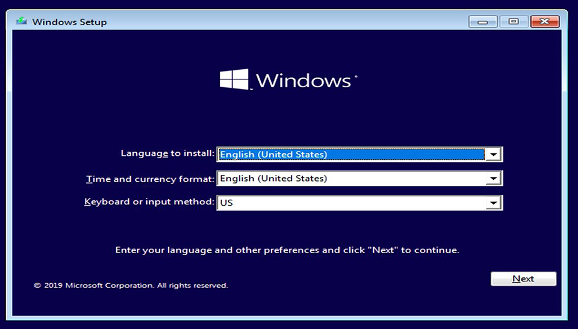

Instalacja Systemu operacyjnego
Instalacja Systemu operacyjnego na nowym komputerze jest niezbędna do działania komputera. Do instalacji będzie nam potrzebna płyta instalacyjna lub odpowiednio przyogotowany pendrive.
W pierwszej kolejności musimy zmienić rozruch komputera z dysku twardego na USB lub CD/DVD-ROM(zależnie od metody instalacji). W tym celu używamy jednego z tych klawiszy: F12, F11, F8, ESC, F2 zaraz po włączeniu komputera, aby włączyć BIOS, gdzie zmieniamy rozruch na CD/DVD-ROM lub Pendrive USB, wszystko potwierdzamy i wychodzimy. Po chwili naszym oczom ukaże się instalator, który pokaże nam dalsze instrukcje.

Instalacja sterowników na nowym sprzęcie
Po zainstalowaniu systemu najważniejszymi rzeczami do zrobienia są instalacje sterowników i aktualizacji. W tym celu będziemy musieli posłużyć się Menedżerem urządzeń, który wyświetli się po wpisaniu jego nazwy w wyszukiwarce systemu(Okienko w lewym dolnym rogu).

Tam możemy zobaczyć nazwy komponentów naszego komputera np. Karta graficzna> Radeon RX570.

Gdy znamy nazwę naszego komponentu, wpisujemy w wyszukiwarce internetowej jego nazwę i frazę sterowniki; "Radeon RX570 sterowniki". Ważne jest to aby pobierać sterowniki tylko z wiarygodnych źródeł i tylko najnowsze.


Do zainstalowania wszystkich sterowników można użyć także zewnętrznego programu, takiego jak Driver Booster, który automatycznie wykrywa i pobiera wszystkie akutalizacje dla sterowników.
Takie programy mają równie dużo zwolenników jak i przeciwników, jedni mówią że pobierają przestarzałe sterowniki, drudzy że instalują bez naszej wiedzy programy spowalniające działanie komputera. Ja osobiście się z tym nie spotkałem i z czystym sumieniem mogę polecić powyższy program.

Po wszystkich niezbędnych akcjach możemy przejść do przyjemniejszej części konfiguracji, czyli konfiguracja pod użytkownika.
Przykładami takich działań może być:
Zmiana tła pulpitu:

Ustawienie ikon pulpitu według naszych upodobań:

Wyłączenie zbędnych dla nas uprawnień systemu:

I oczywiście instalacja potrzebnych nam programów: